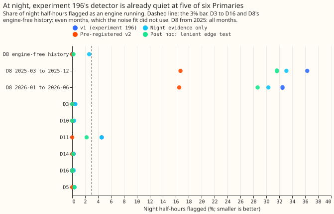
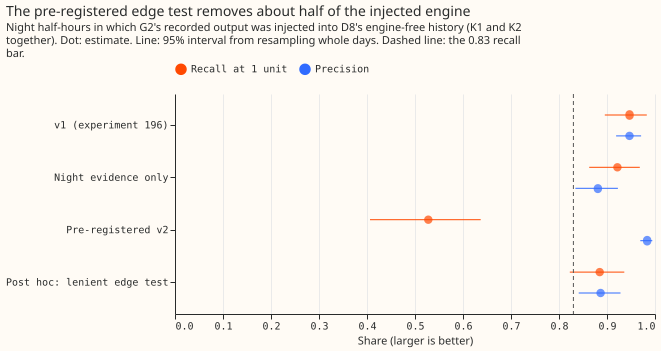
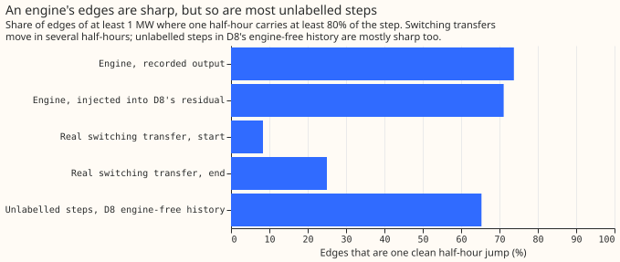
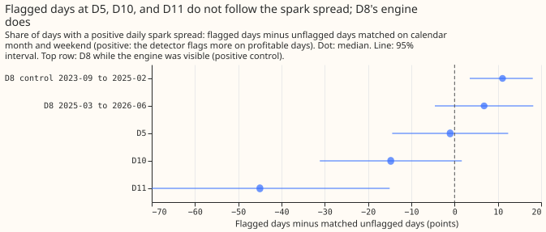
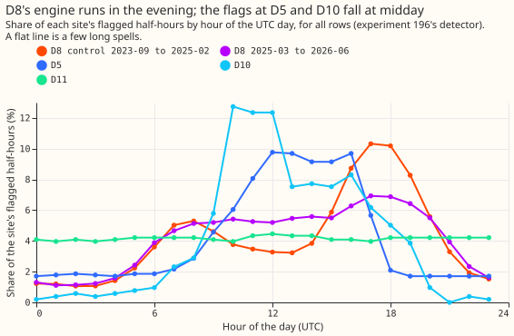

Does reading D8's engine by its edge shape, by night-only evidence, and by price cut the false alarms of the quantised engine detector, and are the "false alarms" at D5, D10, and D11 real engines?
At one anonymised substation (D8), the engine detector from experiment 196 still flags 32.5% to
36.3% of night half-hours from March 2025, so solar panels are not the cause. None of three added
tests (edge shape, night-only evidence, and a price gate) removes the flags. (D8 is one of 16
anonymised Primary substations; an engine is a gas-engine generator; a detector flags the half-hours
in which its hidden Markov model gives the engine-running state the higher probability; the spark
spread is the electricity price minus the gas fuel cost.) The detector from experiment 196 still
flags 29% to 36% of D8's night half-hours from March 2025, when no solar panel produces power. The
edge test, whose thresholds were fixed before any score was read, also discards about half of the
engine signal that we added to D8's readings as a known answer. At D5 and D10, the false alarms of
experiment 196 turn out to be mostly daytime flags: scored on night rows alone, experiment 196's
detector passes the false-alarm bar (at most 3% of clean night half-hours flagged) at five of the
six other Primaries, and the flagged days at D5, D10, and D11 do not follow the spark spread. The
verdict is not supported.
We asked whether three facts about a gas engine, which experiment 196's detector ignored, would cut its false alarms. The facts are that an engine's edges are single-half-hour jumps, that it can run at night when solar panels cannot, and that it runs more when the system price is high. We tested each feature alone and together on the same known answer as experiment 196: the recorded output of a metered gas-engine generator (G2; K1 replays it at its true times in D8's reading and K2 replays it at nine shifted places in D8's engine-free history), subtracted from D8's reading. We then counted false alarms at six other Primaries and three periods of D8, and checked whether the flagged periods at D5, D10, and D11 look like engines. The method builds on Hart (1992) and Kolter and Jaakkola (2012) through experiment 196's hidden Markov model of the number of engine units running. The edge test, the night mask, and the price gate were written for this experiment.
Figures





Results
- Arms. v1 is experiment 196's detector unchanged. N sets every daytime reading to missing so
that only night evidence counts. S drops a flagged spell unless both edges are one sharp jump. P
drops a spell whose mean spark spread is in the lowest fifth. v2 is N plus S plus P. Post hoc: N
plus P, and N plus S with either edge sharp plus P. All arms are scored on night rows, with all
rows as secondary (
printed_known_answers.txt,printed_false_alarms.txt). - Look first (
printed_shape.txt). An engine's edges are sharp: 74% of G2's edges (61 edges) and 71% of the edges after injection into D8's residual (571 edges) are one clean half-hour jump, and the others have one partial half-hour. Real switching transfers are gradual: 8% of 12 starts and 25% of 12 ends are one clean jump. Unlabelled steps in D8's engine-free history are sharp as often as an engine's edges (65%, 49 steps), so sharpness cannot separate an engine from them. Only 24 of the 70 edges of the 35 labelled transfers are 1 MW or more. - Known answers, K1 and K2 pooled, night rows (9,542 half-hours). v1: recall at 1 unit 0.95 (0.90 to 0.98), at 2 or 3 units 1.00, precision 0.95 (0.92 to 0.97), energy error -8%. N: 0.92, 1.00, 0.88, -2%. v2: 0.53 (0.41 to 0.64), 0.66, 0.98, -40%, so every recall threshold fails. K1 and K2 alone give 0.50 (K1 is too small to read) and 0.53 at 1 unit for v2. Edge-test levels 0.5 and 0.7 give 0.58 and 0.44. Post hoc N plus P: 0.90, 0.99, 0.88, -3%. Post hoc lenient edge test: 0.88 (0.82 to 0.94), 0.99, 0.89, -4%.
- Why the edge test fails (post hoc,
printed_diag_edges.txt). At the true start of G2's runs only 69% of edges pass the test, and at the true end 81%. The likely causes, inferred and not tested, are short runs whose edges lie within 3 half-hours of each other and steps under half a unit in D8's noise. - K3 (G2 injected into D8's night rows from 2025-03, recall only, descriptive). v1 recall at 1 unit 0.92 (0.79 to 0.99); v2 0.36 (0.19 to 0.55). Precision is not meaningful for K3.
- False alarms at night (flagged share; false active days a month). Bar: 3% and 1 day. v1 passes at D3 (0.4%, 0.22), D5 (0.3%, 0.07), D10 (0.1%, 0.04), D14, D16, and D8's engine-free history, and fails at D11 (4.6%, 1.08). N fails at D8's engine-free history (2.6%, 1.45). v2 is 0.0% with 0.00 days at every one of these, and v2 on all rows is also 0.0% at D3, D5, D10, D11, D14, and D16.
- D8 from 2025-03 (relaxed bar capped at 10%). v1 flags 36.3% of night half-hours (22.9 days a month) in 2025-03 to 2025-12 and 32.5% (18.8) in 2026-01 to 2026-06. N: 33.1% and 30.3%. v2: 16.7% (10.6) and 16.5% (9.7). Post hoc lenient: 31.6% and 28.7%. The left tail below -2.5 MW holds 18.8% and 11.6% of night half-hours. Both periods fail the bar for every arm.
- Price gate. The gate changes little: at night it removes under 1.5% of D8's flagged half-hours from 2025-03 and none at D3, D10, or D14. On all rows it cuts D5's false active days from 2.02 to 1.72 a month and D10's from 1.05 to 0.90. The gate is only scored from 2023-06 (D8's engine-free history has 576 even-month rows with a price), and K2's price is G2's own at the time it recorded the output, a choice that favours the gate.
- Flagged periods at D5, D10, and D11 (supporting evidence only,
printed_step5.txt).- D8 while the engine is visible (2023-09 to 2025-02, positive control): flagged days have a positive spark spread +11.1 points more often than matched unflagged days (95% 3.5 to 18.1) and a spread £19.8 per MWh higher (15.4 to 24.6); the flagged half-hours peak in the evening.
- D5: -1.0 points (-14.4 to +12.4); 27% of flagged half-hours at night against 46% of all rows; flags peak at 10:00 to 16:00 UTC. The 13 days with 4 or more flagged night half-hours show +30.8 points (0 to 61.5), too few to read.
- D10: -14.8 points (-31.1 to +1.6); 3% of flagged half-hours at night; flags peak at midday.
- D11: -45.0 points (-70.0 to -15.0) from 20 flagged days; 65% at night, with a flat hour profile, which suggests a few long spells that are not an engine's evening pattern.
- D8 from 2025-03: +6.8 points (-4.5 to +18.2), but 482 of 485 days are flagged, so only 3 unflagged days exist, reused to match 44 flagged days, and the test cannot be read.
- ECR (
printed_ecr.txt; supporting evidence, NGED has not been asked). D5 has a 1.0 MW oil engine 3.25 km away, connected 2021-03-11, before every flagged period. D10 has no gas, oil, CHP, or battery site within 5 km. D11 has a 0.2 MW battery connected 2026-04-13 and a 0.499 MW biomass steam turbine connected 2014, neither of which is a price-following engine in the flagged period. D5's flags do not follow the spark spread, so the ECR engine and the flagged periods do not match.
Checks
- Median minus mean forecast per site: not applicable; no forecast is made.
- Mean-forecast error beside a quantile-score contrast: not applicable.
- Triggers fired (no audit was run; the experiment is short of credits for an Opus audit, and the maintainer can call one). Trigger 2: the prediction that night evidence cuts D8's night flags to under 10% failed (33%), and the prediction that flagged days at D5 follow the spark spread failed. The session tested an explanation for each: D8's night rows are flagged at about half the rate of its day rows but still at 29% to 36%, so solar is not the whole cause, and the spark-spread test shows that the positive control works. Trigger 5: v1 on night rows beats N (which holds less input) at D8's engine-free history (0.0% against 2.6%).
- Edge-test thresholds (an edge is sharp when one half-hour carries 0.6 of the step, and the step is at least 0.5 of an engine unit, 0.875 MW) came from the look at G2's edges, so K1 and K2 could not test them independently; the test fails even there.
- Lab shortcuts. We used the expected power in the stored panel, which is driven by ERA5 weather, smoothed posterior probabilities, the frozen 1.75 MW unit from experiment 196, noise for the other Primaries fitted on their whole history. The noise fit saw D8's odd months, so D8's engine-free history is scored on even months.
- Edge cases. D3's coordinates are approximate (the night mask moves by minutes). Night is defined by solar elevation below -3 degrees, and an active day is a UTC date, so a night spanning midnight counts on two dates.
- Plan review. A Sonnet reviewer raised 10 objections to the plan before any score was read; the plan was revised for 9 of them (the price in the K2 injections was kept at G2's own recording time, flagged as favourable to the gate).
What to try next
- Find what causes the step changes in D8's night load after 2025-03: look at the hour of day and the size of D8's night steps, and compare them with the connection date of its 8.91 MW of 11 kV solar and of any new battery.
- Do not run PS3 or later stages on the engine detector. Experiment 196's labels remain usable for 2023-09 to 2025-02 only.
- If a detector of price-following assets is still wanted, use the evening pattern of D8's visible engine (Figure 5) as the signature, not the edge shape.